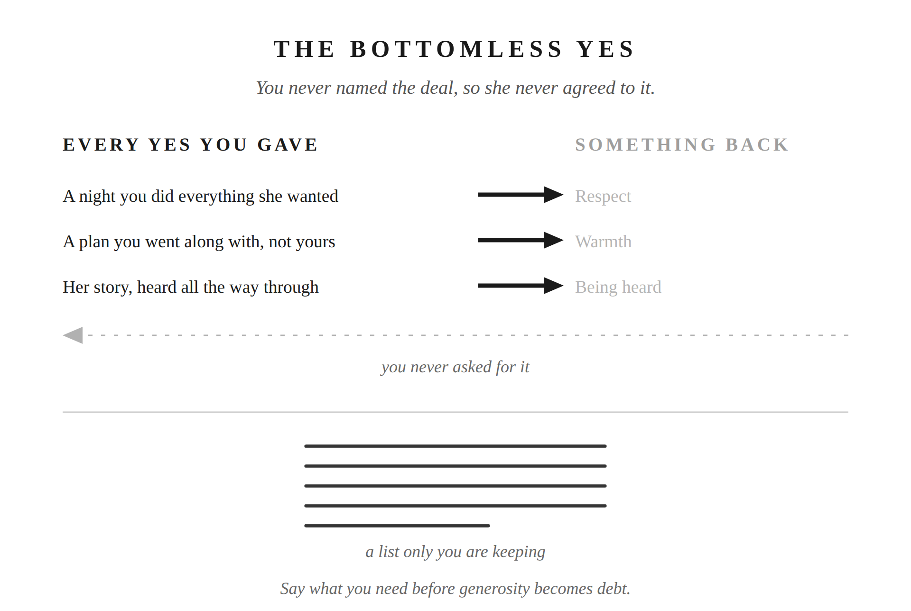

You know the line. Happy wife, happy life. Said with a grin, like a joke between men who’ve made their peace with it. You’ve lived by it more literally than you’d ever say out loud. Every “sounds good.” Every “whatever you want.” Every small opinion you swallowed because raising it felt like more trouble than it was worth. That’s not peace. That’s a bill you’re paying in quiet installments, so quiet you’ve stopped noticing them.
On the surface, the line is fine. You want her happy. You’d rather bend than fight. Most of what she asks isn’t worth a stand. And the men who hand you the line mean well by it. They’re trying to give you a shortcut through the friction of two people sharing a life.
The trouble is what the line is actually doing underneath. You comply, and you stay quiet, and somewhere in you, without ever saying so, you expect something back for it. Respect. Warmth. To be wanted. To be listened to the way you listen. You never named the deal out loud, so she never agreed to it. She doesn’t even know there is one.
Isn’t being agreeable just love, though? Sometimes. A yes you actually meant is love. A yes you gave expecting something back for it, something you never asked for directly, is a deal. Two psychologists, Dana Jack and Diana Dill, gave the habit underneath it a name in 1992: self-silencing. It means hiding what you actually think and want so things stay smooth on the surface. Their original research was done on women. The pattern isn’t about gender. It works the same way in men.
Robert Glover names a version of this in No More Mr. Nice Guy. The man who never says no isn’t being loving. He’s performing, running a deal he never wrote down. He accommodates. In return he expects appreciation, closeness, sex, being seen as easy to live with. He never once said that’s what he wanted. His wife can feel that something is expected of her. She just can’t always name what.
Chapters 6 and 7 already talked about the mental tally you keep of who does more around the house. This is the same habit, aimed somewhere else. Instead of tracking chores, you’re tracking what you think you’re owed for staying quiet. Nobody sees that list but you.
This isn’t usually one blowup. It’s smaller than that, and it happens more often. Every night you did everything she wanted and it still turned into a sexless night. Every time you went along with what she wanted to do, and she didn’t want to do what you wanted. Every story of hers you listened to all the way through, and she never asked to hear one of yours back.
None of those is a fight. None of those even sounds like a complaint you’d bring to her. But you remember them. You’re keeping a list. The same kind of list Chapters 6 and 7 already described. Every unreciprocated night adds one more line to it.
There’s an old word for this. Gunnysacking. You keep every one of these small disappointments quietly out of sight. You don’t name them one at a time, while they’re still small and manageable. John Gottman spent decades studying what actually predicts divorce, and he found four warning signs: criticism, defensiveness, contempt, and stonewalling. Contempt is the one that matters most here. It’s what disappointment turns into when it never gets spoken and never gets addressed. It happens slowly instead. Disappointment curdles into resentment, then into something closer to disdain, aimed at the person you’re not telling any of this to.
It’s not that you’re afraid of disappointing her. You’re not running a calculation about her feelings at all. You’re exhausted. Work, money, everything else life is currently demanding, and the marriage is the one place that still feels stable. Saying something real risks that stability. So you don’t say it. It doesn’t feel like avoidance in the moment. It feels responsible.
Marcus Aurelius named the same instinct, in a different context. He was an emperor who wrote a private notebook to himself that later became the Meditations. “I have often wondered how it is that every man loves himself more than all the rest of men, but yet sets less value on his own opinion of himself than on the opinion of others. If then a god or a wise teacher should present himself to a man and bid him to think of nothing and to design nothing which he would not express as soon as he conceived it, he could not endure it even for a single day.” (Meditations 12.4, Long trans.) Read that as a diagnosis. It explains something true about you. Many men are built this way. You protect whatever peace is left, even at the cost of never saying what you actually think.
The trade doesn’t actually protect peace, though. It costs it. The writer Elie Wiesel once said the opposite of love isn’t hate. It’s indifference. Caring too little to risk the fight. Apply that at home, and staying quiet to protect the peace isn’t you choosing love over conflict. You’re choosing to care a little less, one night at a time, because caring less feels safer than risking what’s left. You’d rather be quietly unhappy than actively unhappy. That trade doesn’t feel like giving up. It feels like keeping the peace. But quiet unhappiness, kept up long enough, is just apathy with better manners.
Now for the misreading a thoughtful man will make here. Epictetus, in his handbook the Enchiridion, tells his student to mostly keep silent. To speak rarely. And when he does speak, not to blame or praise or compare other people. A Stoic-curious reader picks that up and hears: Stoicism means staying quiet. Perfect. Confirms the strategy.
But that’s not the whole point Epictetus was making. He wasn’t telling people to go silent forever. He was telling them to be picky. Save your words for what actually matters instead of wasting them on gossip and trivia. That’s a rule about how much you talk. It has nothing to do with hiding things from your wife.
So run the same four questions Chapter 1 already gave you. Is this actually worth saying, and is now the moment. Are you willing to say it even though it risks the peace you’ve been protecting. Can you tell the difference between what genuinely needs raising and what you should just let go of. This isn’t permission to bring up every little annoyance. And when you do speak, can you deliver it as your position rather than an attack on hers.
The logical part is the check on whether it’s real and now. The brave part is being willing to risk the stability to say it anyway. The self-controlled part is the discipline to name the small things before they pile up. It’s also knowing when not to raise a fuss about nothing. The kind part is the delivery. That last one is what keeps this from turning into permission to complain. Restraint means choosing what’s worth saying, and saying it well.
If you keep your concerns to yourself, the decisions can end up reflecting only what she has said. Staying calm was never supposed to mean staying silent.
Next time you’re about to say “sounds good,” check whether it actually is, and if it isn’t, say so, plainly and kindly, while the sack is still light.

Putting into Practice
Mechanism: The Bottomless Yes
Conversation sentence: He kept saying yes expecting something back for it, and when it didn’t come, the disappointment piled up quietly instead of turning into one big blowup.
He treated “happy wife, happy life” as an unspoken trade: comply and stay quiet, and the reward (respect, warmth, being heard) would follow on its own. When it didn’t, because the deal was never named, specific disappointments piled up quietly and curdled toward contempt, while the avoidance itself produced the real cost: apathy, not peace. The fix isn’t becoming combative, it’s the same four-part check from Chapter 1 (logical, brave, self-controlled, kind) applied to the decision of whether to speak, which is exactly what Epictetus’s own teaching on selective, disciplined speech actually recommends.
Lesson: Epictetus told his students to be picky with their words, not silent with them. Restraint was never about hiding what you think from the person closest to you. It’s about choosing what’s worth saying, and saying it well.
Challenge: Staying quiet and calling it keeping the peace feels responsible in the moment, not evasive. But every unreciprocated night, every story listened to and never asked about in return, becomes one more line on a list only he’s keeping. Nobody else even knows there’s a tally.